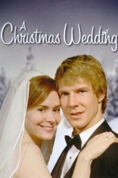

Um Casamento na Noite de Natal (2006)


christmas,wedding

Avaliação (TMDb):


5.3/10 (26 votos)
Avaliação (Usuário):
Outro Título:A Christmas Wedding
País:United States, 89 minutos
Idiomas falados:Inglês, Português
Gênero(s):Comédia, Família, Romance, Sci-Fi
Diretor(s):Michael Zinberg
Codec:MPEG-2 (DVD)
Número: 5321
Sinopse:
Emily e Ben pretendem se casar no Natal. Quando o dia se aproxima, ela precisa viajar a trabalho, deixando os preparativos da festa para Ben. Uma nevasca se aproxima e Emily teme não chegar a tempo do casamento.
Elenco:
Sarah Paulson, Richard Blackburn, Eric Mabius, Dean Cain, Reagan Pasternak
Tipo de mídia: DVD R/RW,
Legendas: Inglês, Português, Sem Legendas
Alugado: Não
Tela: Anamorphic Widescreen